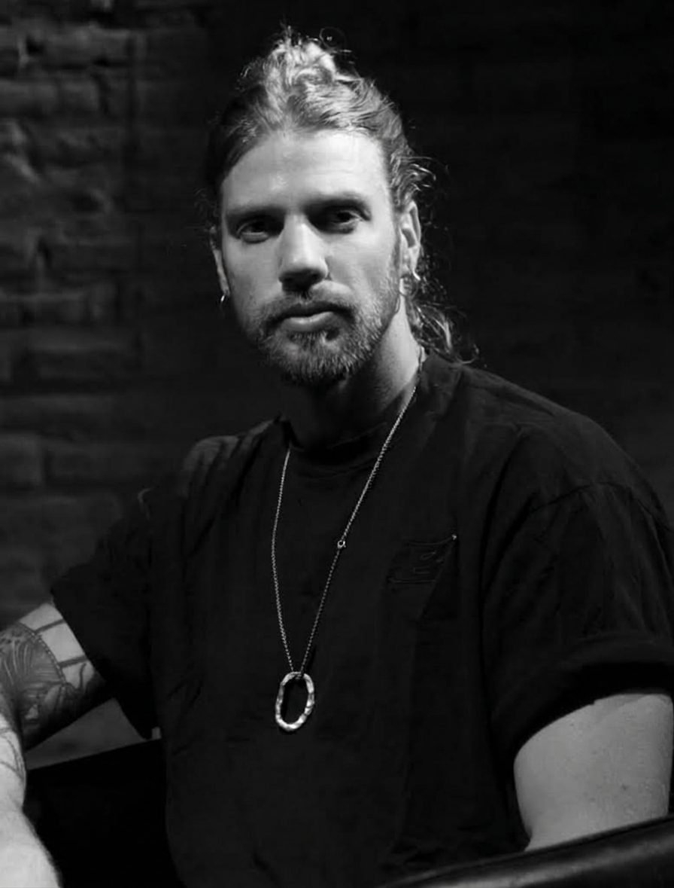

recorrido
director,
dramaturgo
e investigador

Fundó y dirige Teatro Consciente, una escuela de formación actoral, con 10 años de trayectoria. En 2024 cofundó Pasaje Teatral, un teatro ubicado en Vicente López donde funciona la escuela, produce y dirige obras propias.
Como autor y director, estrenó en salas comerciales como Metropolitan, La Comedia, Multiescena, Teatro Picadilly, Teatro Porteño y Microteatro y en el circuito independiente porteño.
En cuanto al circuito oficial, dirigió para el Teatro Nacional Cervantes y en el Teatro San Martín, este año, dirigió una obra de la Unión Europea y, en 2027, estrenará como autor.
Fue director de casting para videoclips de Soledad Pastorutti, Abel Pintos, Los Tabaleros, Jimena Baron, Los Nocheros, Las Pastillas del Abuelo, Los Caligaris, entre otros.
También trabajó en cine y televisión como guionista para una de las principales productoras del país (Telefe) y como coach actoral de actores premiados (ACE y Goya español).
Estudió Lic. en Dirección y Producción de Cine, TV y Radio en la Universidad de Belgrano y, actualmente, finaliza la Lic. en Filosofía en la Universidad de Buenos Aires, con orientación en Filosofía de la Mente.
Con su mirada escéptica y de marcado corte existencialista, usa el teatro para explorar problemáticas filosóficas.
A partir de sus estudios en filosofía desarrolló una investigación sobre la fenomenología de la percepción, aplicada al teatro y la actuación. En 2026 presentó su primer libro en Madrid y Buenos Aires, “Teatro consciente: Hacia un teatro fenomenológico”.
Es creador de Teatro Short, un formato de obras de quince minutos con presencia en Punta del Este y Buenos Aires.